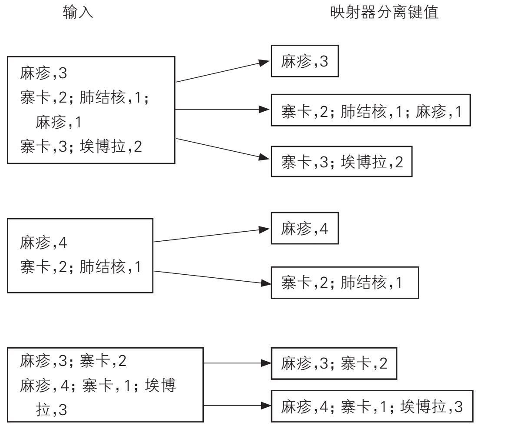
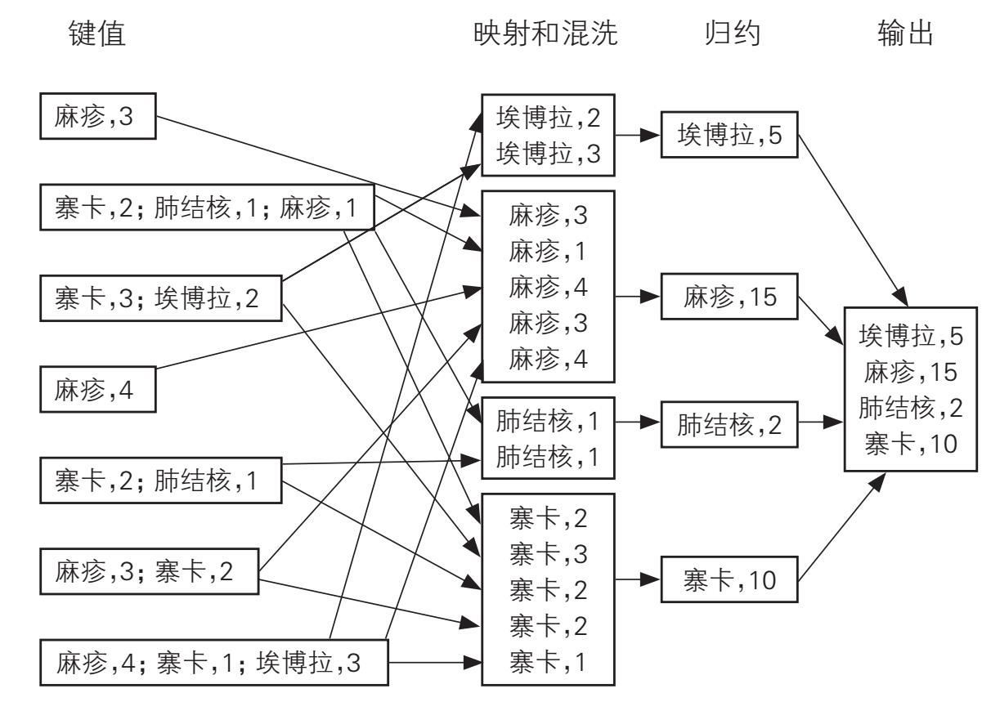
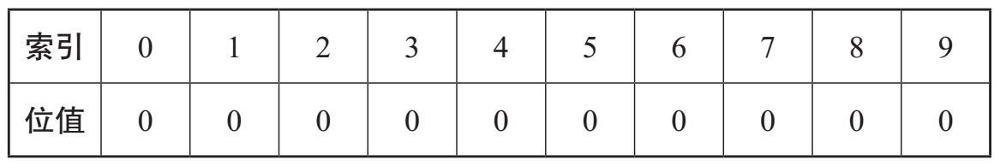
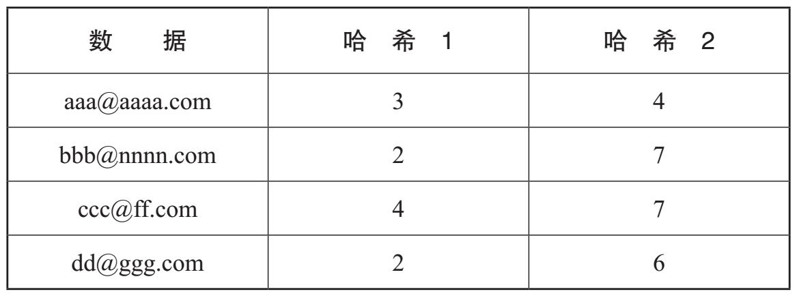
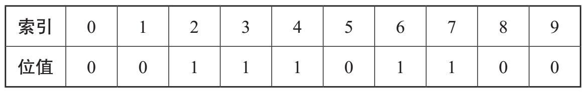
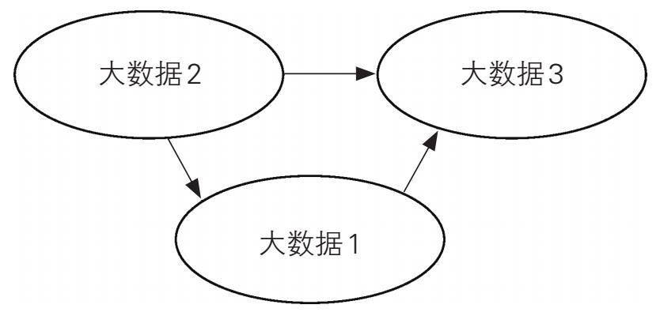
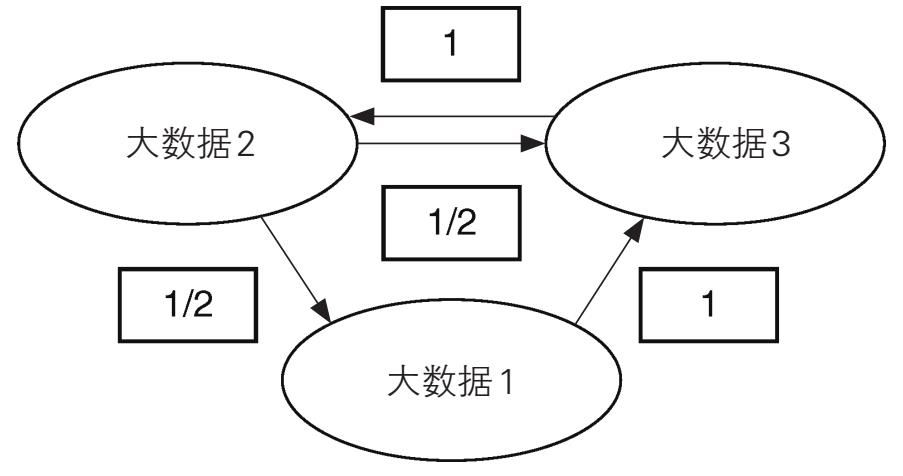
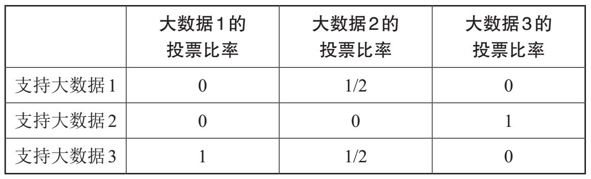

在讨论了如何收集和存储大数据之后，我们现在来看一看从数据中发现有用信息的技术，例如客户偏好或流行病传播速度等。随着数据集规模的增加，大数据分析法（相关技术的统称）的变化也日新月异，经典的统计方法为这种新范式提供了广阔的空间。
第三章介绍的海杜普提供了一种通过分布式文件系统存储大数据的方法。我们下面以映射归约（MapReduce）为例，来看一下大数据分析法。映射归约是一种分布式数据处理系统，它是海杜普生态系统核心功能的一部分。亚马逊、谷歌、脸书和许多其他组织，都在使用海杜普来存储和处理它们的数据。
映射归约
处理大数据的一种流行方法是将其分成小块，然后对它们分别进行处理。这基本上就是映射归约的工作方式。它将所需的计算或查询工作分配到众多计算机上来完成。通过去繁就简的例子来理解映射归约的工作方式非常值得尝试，实际情况也确实需要我们这样做，因为当我们手工操作时也需要依靠极为44 简化的示例，但它仍可演示用于大数据的分析过程。通常情况下，会有成千上万的处理器用来并行处理海量数据，可贵的是，该过程具有可伸缩性。这种想法不仅非常巧妙，且易于遵循。
映射归约分析模型由多个部分组成：映射 （map）组件、混 洗 （shuffle）过程和归约 （reduce）组件。映射组件由用户编写，并对我们感兴趣的数据进行排序。混洗过程是映射归约的核心，它根据键值对数据进行分组。最后是归约组件，它也由用户提供，通过对组值的合并得到最终的结果，并将其发送到海杜普分布式文件系统（HDFS）进行存储。
假设我们在海杜普分布式文件系统中存储了以下键值对文件，并具有下列各项的统计信息：麻疹、寨卡病毒、肺结核和埃博拉病毒。疾病是关键字（键名），值表示每种疾病的病例数。我们感兴趣的其实是各种疾病的总数量。
文件1：
麻疹，3
寨卡，2；肺结核，1；麻疹，1
寨卡，3；埃博拉，2
文件2：
麻疹，4
寨卡，2；肺结核，1
文件3：
麻疹，3；寨卡，2
麻疹，4；寨卡，1；埃博拉，3
映射器可以让我们逐行分别读取各个输入文件，如图11所示。在读取数据之后，映射器将为每个不同的行返回键值对。45

图11 映射功能
在对文件进行分片（split）并获取相应的键值对之后，算法的下一步是由主程序对键值进行排序和混洗。上述疾病将会按字母顺序排序，其结果被存入适当的文件以供归约程序调用，如图12所示。
如图12所示，接下来，归约组件将映射和混洗阶段的结果组合起来，并将其（每种疾病）发送到各自独立的文件中。随后，算法中的归约步骤汇总各单位数据，并将汇总结果作为键值对发送至最终输出文件，该文件可以在分布式文件系统（DFS）中保存。
以上只是一个非常小的示例，实际上，映射归约方法可以帮助我们分析规模宏大的数据。例如，通过“爬网侠”数据平台，46 一家非营利机构提供的免费互联网副本，我们可以使用映射归约编写的计算机程序来计算每个单词在互联网上出现的频次。

图12 混洗和归约功能
布隆过滤器
大数据挖掘的一种特别有用的方法是布隆过滤器，它是20世纪70年代开发的一种基于概率论的技术。正如我们将要看到的那样，布隆过滤器特别适合于那些将存储作为主要考量、数据可存为列表的应用程序。
布隆过滤器背后的基本思想是，基于数据元素列表来构建一个系统，用以回答“列表中是否有X？”的问题。对于大数据集来说，搜索整个集合可能会费时太多而不具有实用性，因此布隆过滤器被当成了新的解决方案。该方法基于概率，并非100%准确，算法对某个元素是否属于列表进行判断，虽然会存在一定的误差，但它确实是一种从数据中提取有用知识的快速、可靠和47 利于有效存储的好方法。
布隆过滤器应用广泛。例如，它可用于检查特定的网络地址是否链接到恶意网站。在这种情况下，布隆过滤器充当的是已知恶意链接黑名单的角色，我们可以根据该黑名单快速准确地检查你刚刚单击的网络地址（URL）是否安全。新发现的恶意网址会被不断添加到黑名单中。由于现在有超过十亿个网站，而且每天都会有更多的网站诞生，因此跟踪恶意网站就成了一个应对大数据挑战的问题。
恶意电子邮件是类似的案例，它既可能是垃圾邮件，也可能包含恶意代码而具有钓鱼的企图。布隆过滤器为我们提供了一种甄别每个电子邮件地址的快速方法，如果发现地址存疑，就会及时发出警告。每个地址大约占用20个字节，对数目庞大的地址逐个存储和检查由于非常耗时而丧失实用价值，因为我们需要在极短的时间完成存储和检验的过程。通过使用布隆过滤器，可以显著减少存储的数据量。下面我们来构建一个小型的布隆过滤器，以了解它的工作原理。
假设我们有以下要标记为恶意电子邮件地址的列表：〈aaa@aaaa.com〉；〈bbb@nnnn.com〉；〈ccc@ff.com〉；〈dd@ggg. com〉。为了构建布隆过滤器，首先假定当前计算机上有10比特可用的内存。它就是所谓的位数组 ，起始值为空。对于一个位来说，只有两个状态，通常用0和1表示。因此，我们首先将位数组中的所有值都设置为0（表示空），而那些值为1的位，则意味着与其相关联的索引至少被分配过一次，这一点我们马上就能看到。
位数组的大小是固定的，无论我们添加多少内容，其大小都48 将保持不变。我们给位数组建立索引，如图13所示。

图13 10位数组
现在，我们需要引入哈希函数 。哈希函数是一种算法，旨在将给定列表中的每个元素映射到数组中的某个位置。通过此举，我们现在仅需要将映射的位置存储在数组中，而不是电子邮件地址本身，这样存储空间就得以减少。
出于演示的目的，我们只展示了使用2个哈希函数的情形，但通常情况下我们会使用17个或18个函数，所涉及的数组也会大很多。由于这些函数被设计为均匀地映射，因此每次将哈希算法应用于不同的地址时，每个索引都有相等的机会被映射到。
那么，首先我们使用哈希算法将每个电子邮件地址分配给数组中的某个索引。
如果要将“aaa@aaaa.com”添加到数组中，首先要传递给哈希函数1，该函数将返回数组索引或位置值。例如，假设哈希函数1返回了索引3，被再次应用于“aaa@aaaa.com”的哈希函数2返回了索引4，那么这两个位置的存储位值都会变成1。如果某个设置的值已经为1，则保留原值，不作改动。同理，添加“bbb@nnnn.com”可能会导致位置2和7被占用或位值被设置为1；而“ccc@ff.com”可能会返回位置4和7。最后，假定哈希函数应用于“dd@ggg.com”并返回了位置2和6。图14是上述结果的汇总。
实际的布隆过滤器数组如图15所示，被占用位置的值设置49 为1。

图14 哈希函数结果汇总

图15 侦测恶意电子邮件地址的布隆过滤器
那么，我们如何能将此数组作为布隆过滤器使用呢？假设现在我们收到了一封电子邮件，并且希望检查该电邮地址是否在恶意电子邮件地址列表中。假定该地址映射到位置2和7，那么它们的值都是1。由于返回的所有值都等于1，因此它很可能 在列表中，因此也就很可能 是恶意邮件。我们不能肯定地说它一定在该列表中，因为位置2和7也可能是其他地址的映射结果，并且索引也可能被多次使用。正因为如此，对元素所进行的列表登录与否的侦测还具有误报的概率。但是，如果任何一个哈希函数都返回了值为0的数组索引（别忘了，通常会有17个或18个函数），那么我们就能肯定该地址不在列表中。
虽然其中涉及的数学知识很复杂，但是我们可以看出，数组越大，未被占用的空间就越多，因而误报的次数或错误匹配的机会就越少。显然，数组的大小由所使用的键及哈希函数的数量50 来决定，但无论如何，它必须有足够大的数量以确保有充足的未被占用的空间，从而能使过滤器有效运行，并最大程度地减少误报的次数。
布隆过滤器反应速度很快，它可以非常有效地侦测欺诈性信用卡交易。过滤器会检查特定项目是否属于给定的列表或集合，异常交易会被标记为常规交易列表之外的行为。例如，如果你从未使用信用卡购买过登山装备，则布隆过滤器就会将购买攀岩绳的行为标记为“可疑”。另一方面，如果你确实购买过登山装备，则布隆过滤器就会将此次购买识别为“可接受”。当然事实也未必尽然，出错的概率依然存在。
布隆过滤器也可用于过滤垃圾邮件。垃圾邮件过滤器给我们提供了一个很好的范例，因为我们并不知道确切的所要查找的内容。通常情况下，我们寻找的只是模式，因此如果我们希望将包含“mouse”一词的电子邮件均视为垃圾邮件，那么我们同时就希望将包含诸如“m0use”和“mou$e”之类变体的邮件也当作垃圾邮件。事实上，我们希望将包含该词所有可能的可辨别变体的邮件都识别为垃圾邮件。过滤与给定单词不匹配的所有内容是非常容易的，因此我们将只允许“mouse”通过过滤器。
布隆过滤器还可用于提升网络查询结果排名算法的速度，这是致力于网站推广的人士颇为感兴趣的话题。
佩奇排名
当我们使用谷歌搜索时，返回的网站会依据其与搜索词的相关性进行排名。谷歌主要通过一种被称为“佩奇排名”（PageRank）的算法来实现排序。人们普遍认为，这个算法是以谷歌的创始人之一拉里·佩奇的姓氏来命名的。他与公司的联合创始人谢尔盖·布林合作，发表了有关该新算法的论文。在51 2016年夏季之前，佩奇排名的结果可以公开获取，只要下载使用佩奇排名工具条就可以得到结果。公开的佩奇排名工具条指标范围从1到10。在该工具被下架之前，我保存了一些结果。如果我使用笔记本电脑在谷歌搜索栏中输入“大数据”，则会得到这样一条消息：“大约3.7亿个结果（0.44秒）”，佩奇排名指标为9。页面网页列表的顶端是一些付费广告，随后是维基百科。使用“数据”为关键词进行检索，返回的结果是：约55.3亿个结果（0.43秒），佩奇排名指标为9。其他的都是佩奇排名指标为10的例子，其中包括美国政府网站、脸书、推特和欧洲大学协会。
佩奇排名的算法基于指向网页的链接数——链接越多，得分越高，页面作为搜索结果的显示就越靠前。佩奇排名与访问页面的次数多少无关。如果你是网站设计师，你一定想优化你的网站，以使它能在给定的某些关键词搜索时靠近列表的顶部，因为大多数人只会看前三个或四个搜索结果。这需要大量的链接，因此链接交易在业内就成了公开的秘密。为了打击“人工”排名，谷歌会分配一个新的0排名给有牵连的公司，甚至将它们从谷歌完全删除，但这并不能解决问题；交易只是被迫潜入地下，链接继续被出售。
佩奇排名本身并没有被废弃，它现在是一个大型排名程序的一部分，只不过它不再提供给公众查看。谷歌会定期重新计算排名，以便及时反映新链接和新网站的情况。由于佩奇排名具有商业敏感性，因此无法获取其详细而完整的资料，但是我们可以通过一个示例来了解它的总体思路。佩奇排名算法是基于概率论所提出的一种分析网页之间链接的复杂方法，其中概率1表示“确定性”，概率0表示“不可能”，其他所有结果的概率值52 都位于二者之间。
要搞清楚排名的工作原理，我们首先需要知道什么是概率分布。如果我们投一个六面匀称的骰子，那么从1到6这六个数字的概率是相等的，也就是说每个数字的概率都为1/6。所有可能结果的汇总以及与之相关的概率就是概率分布。
回到我们按照重要性对网页进行排名的问题，我们不能说每个网页都同等重要，但是如果我们有一种能为每个网页分配概率的方法，则可以合理地表示网页的重要性。因此，诸如佩奇排名之类的算法所要做的就是为整个网络构建概率分布。为了解释这一点，让我们设想有一个随机的网络浏览者，他实际上可能从任何网页开始，然后通过有效的链接进入另一个页面。
假设有一个简单的网络，它只有三个网页，分别为“大数据1”、“大数据2”和“大数据3”。页面间只有从“大数据2”到“大数据3”，从“大数据2”到“大数据1”，以及从“大数据1”到“大数据3”的链接。该网络的结构如图16所示，其中节点代表网页，箭头（边缘）表示链接。
每个页面都有一个佩奇排名，代表其重要性或受欢迎程度。“大数据3”的排名最高，因为指向它的链接最多，因此点击率也最高。假如现在那个随机浏览者访问了一个网页，如果我们把他或她对下一个网页的浏览视为投票，那么对所有备选的下一个网页来说得票的概率是均等的。例如，如果我们的随机浏览者当前正在访问“大数据1”，则接下来的唯一选择是访问“大数据3”。因此，可以说“大数据1”对“大数据3”投了1票。

图16 小型网络的有向图53
在真实的网络中，新链接会不断涌现。因此，假设我们现在发现“大数据3”链接到“大数据2”，如图17所示，则“大数据2”的佩奇排名将发生变化，因为随机浏览者在浏览“大数据3”之后有了一个可供选择的网页继续浏览。

图17 增加链接后的小型网络有向图54
如果我们的随机浏览者从“大数据1”开始，那么接下来的唯一选择就是访问“大数据3”，因此“大数据3”得到了1张票，也是全部的票。相比之下，“大数据2”的得票数为0。如果他或她从“大数据2”开始，则投票数被平均分配至“大数据3”和“大数据1”。最后，如果随机浏览者从“大数据3”开始，则他或她的全部投票只能投给“大数据2”。图18是对上述投票方式的汇总。
从图18我们可以看到每个网页的总得票数如下：
“大数据1”的总票数是1/2（来自“大数据2”）
“大数据2”的总票数是1（来自“大数据3”）
54 “大数据3”的总票数是1½（来自“大数据1”和“大数据2”）

图18 各网页的得票数
由于冲浪者起始页的选择是随机的，因此起始页的机会均等，它们初始的佩奇排名分配值都为1/3。为了给以上示例最终赋值，我们需要根据每个页面的得票数更新初始的佩奇排名。
例如，“大数据1”仅从“大数据2”那里得到了1/2票，因此“大数据1”的佩奇排名为1/3×1/2=1/6。与之类似，“大数据2”的佩奇排名为1/3×1=2/6，“大数据3”的佩奇排名为1/3×3/2=3/6。由于所有网页佩奇排名的总数值为1，因此我们就得到了一个概率分布，它可以显示各网页的重要性或排名情况。
但是实际情况要复杂一些。我们说过，随机浏览者选择任意网页的概率为1/3。第一步之后，我们计算出随机浏览者浏览“大数据1”的概率为1/6。那么，第二步之后呢？好了，我们再次使用当前的佩奇排名作为得票数来计算新的佩奇排名。此轮的计算略有不同，因为当前的佩奇排名不相等，但是方法大同小异。计算所得的新的佩奇排名如下：“大数据1”为2/12，“大数据2”为6/12，“大数据3”为4/12。重复这些步骤或迭代，直到算法收敛为止，也就是说，对佩奇排名的计算过程一直持续，直到无法通过进一步的乘法运算修改数值为止。得出最终排名后，佩奇排名就可以为给定搜索选择排名最高的页面。55
佩奇和布林在其原始研究论文中提出了一种计算佩奇排名的方程式，其中包括一个阻尼因子d，它表示随机浏览者单击当前页面上任一链接的概率。因此，随机浏览者不单击当前页面上任一链接的概率为（1—d），也意味着该随机浏览者已经完成了浏览。正是阻尼因子确保了经过足够数量的迭代计算后，整个网络上的平均佩奇排名值稳定为1。佩奇和布林在论文中说，经过52次迭代后，包含3.22亿个链接的网络佩奇排名会趋于稳定。
公共数据集
有许多免费的大数据集，感兴趣的团体或个人可以将其用于自己的项目。本章前面提到的“爬网侠”就是其中一例。作为亚马逊公共数据集的一部分，到2016年10月的时候，“爬网侠”存档的网页数超过了32.5亿个。公共数据集包含广泛的专业领域数据，包括基因组数据、卫星图像和全球新闻数据。对于不太可能自己编写代码的人来说，谷歌的“N元浏览器”（Ngram Viewer）提供了一种有趣的方式来交互式浏览一些大型数据集（有关详细信息，请参阅“进一步阅读”）。
大数据范式
我们已经知道了大数据的一些有用之处，在前面的第二章我们还讨论了小数据。对于小数据分析来说，科学方法是行之有效的，并且必然涉及人机互动：某人有了个想法，提出了假设或模型，并设计了测试真伪的方法。著名的统计学家乔治·博克斯在1978年写道：“所有模型都是错误的，但有些却是有用的。”他的意思是，一般而言，统计和科学模型不能准确描述我们56 所处的世界，但是好的模型也是有用的，我们可以据此进行预测并自信地得出结论。但是，正如我们已经看到的，在处理大数据时，我们并不遵循这种方法。相反，我们发现处于主导地位的是机器，而不是科学家。
托马斯·库恩在1962年的著作中描述了“科学革命”的概念，它发生在规范科学的现有范式在相当长的时间内得到充分发展和研究之后。当难以解决的异常现象不断出现，现有的理论受到挑战，研究人员会对理论失去信心，此时可以说“危机”来了。“危机”最终将由新的理论或范式来化解。如果新的范式要想被人们接受，那么它必须能够解答旧范式不能应对的一些问题。但是，总的来说，新范式不会完全压倒以前的范式。例如，从牛顿力学到爱因斯坦相对论的转变，改变了科学界看待世界的方式，但并没有使牛顿定律过时：牛顿力学变成了范围更广的相对论的一个特例。从经典统计学到大数据分析的转变，也代表了巨大的变化，并且具有范式转变的诸多特征。因此，不可避免地需要开发新的技术来应对这种新情况。
下面讨论一下在数据中寻找相关性的技术，该技术通过变量之间的关系强度进行预测。经典统计学已经确认，相关并不意味着因果关系。例如，老师有可能记录了学生的缺勤数和成绩，然后，老师发现两者之间存在明显的相关性，他或她可能会使用缺勤数来预测成绩。然而，缺勤会导致成绩差这个结论是错误的。仅通过盲目计算的结果，无法知道为什么两个变量之间具有相关关系：也许学习能力较弱的学生具有逃课的倾向；也许由于疾病而缺勤的学生以后无法追赶。只有通过对数据的分析和揣摩，才能确定哪些相关性是真实有用的。57
至于大数据，使用相关性会产生更多的问题。如果我们使用一个庞大的数据集，编写的算法会返回大量的虚假相关，它们与任何人的见解、观点或假设都大相径庭。错误的相关会产生问题，例如离婚率和人造黄油消费之间的关系，这只是媒体报道的许多虚假相关中的一例。通过应用科学方法，我们可以看到这种所谓的相关性原来如此荒谬。实际上，随着变量的增加，虚假相关的数量也会上升。这是试图从大数据中提取有用知识面临的主要难题之一，因为在用大数据挖掘这样做的时候，我们通常寻求的就是模式和相关性。正如我们将在第五章中看到的那58 样，谷歌流感趋势预测失败的原因之一，就是这些问题。